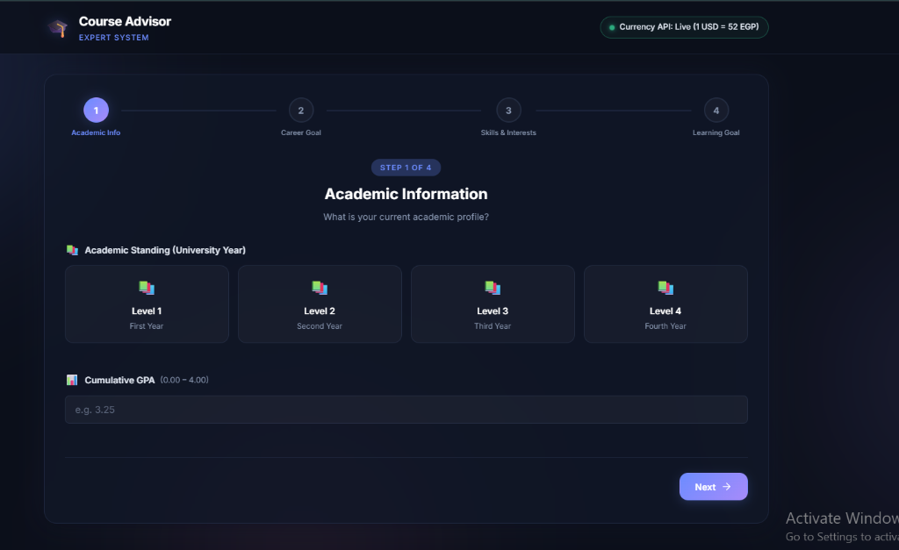
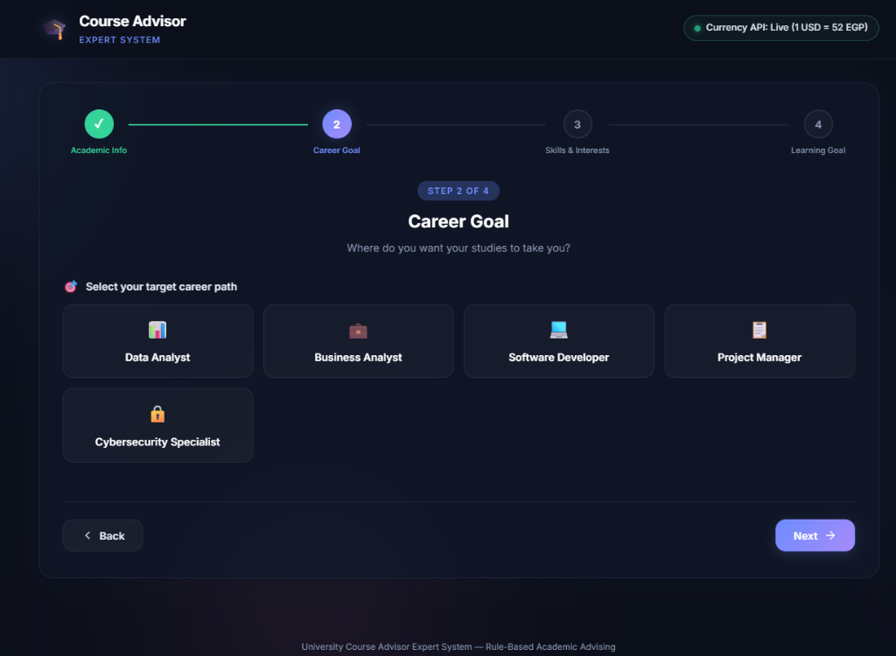
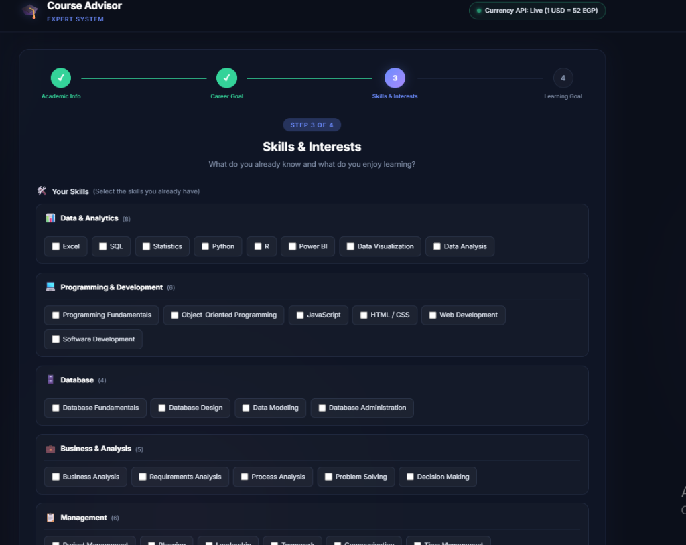
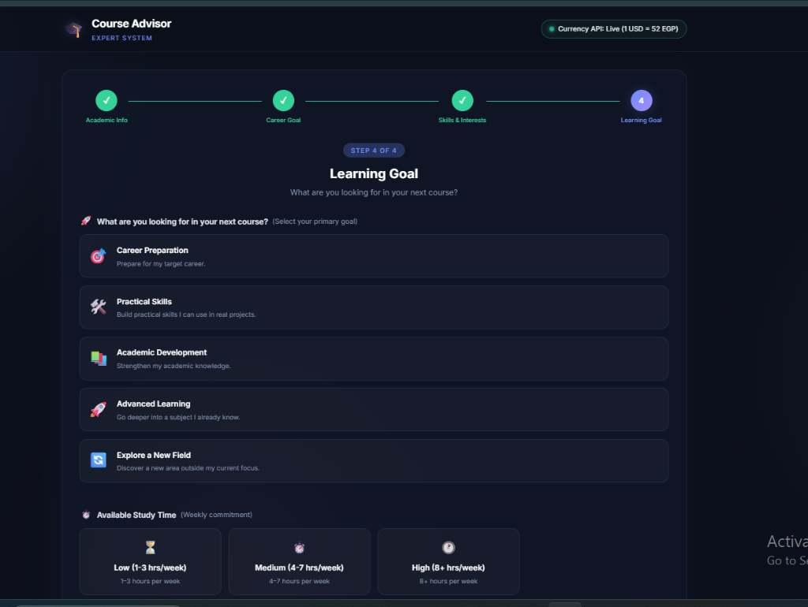

University Course Advisor — Rule-Based Expert System
An intelligent academic decision support system that evaluates student eligibility, calculates 100-point weighted multi-factor matches, generates explainable recommendations, and integrates live USD/EGP currency conversion.
University students frequently struggle to select optimal elective courses aligned with their career ambitions, current GPA, and existing skillset. I engineered a Rule-Based University Course Advisor Expert System built on a classical 4-tier knowledge architecture (Knowledge Base → Inference Engine → Explanation Engine → UI Application). The system systematically filters 23 accredited courses across 6 academic disciplines, executes strict prerequisite/GPA eligibility rules, calculates a 100-point multi-attribute weighted match score, and delivers transparent, personalized justifications explaining exactly why a course was recommended. Additionally, it integrates a Live Exchange Rate API to convert course costs from USD to Egyptian Pounds (EGP) in real time.
Classical Expert System Architecture
A deterministic, transparent decision-making pipeline designed for academic advising.
1. Knowledge Base
Encapsulates domain facts and rules: 23 catalog courses, 5 career paths, 5 learning goals, prerequisite chains, minimum GPA constraints, and categorized skill ontologies.
2. Inference Engine
Executes two-stage reasoning: filters out ineligible courses based on standing and GPA, then applies multi-criteria mathematical scoring (100 pts) across eligible options.
3. Explanation Engine
Converts numeric inference scores into human-readable justifications. Explains exact career alignment, academic fit, skill synergy, and actionable unlocks for locked courses.
4. Live Currency API
Fetches live USD/EGP exchange rates asynchronously to dynamically compute local course enrollment tuition alongside standard international pricing.
4-Step Student Profiling & Decision Journey
Explore the complete user journey from profile input to the transparent Expert System evaluation.

Academic Standing & Currency Status
Captures the student's foundation: Academic Year (Level 1 to Level 4) and Cumulative GPA (0.00 – 4.00), while establishing the real-time currency conversion handshake.

Career Pathway Intent Mapping
Allows students to select their primary professional aspiration, which carries the highest single weighting (25 points) in the Expert System evaluation.

Categorized Skill & Subject Matrix
Presents skills and subject interests grouped into logical academic domains rather than an unorganized generic list, capturing prior knowledge and genuine academic passion.

Learning Preferences & Workload Fit
Aligns course pedagogical difficulty with the student's available study time and primary learning intent to prevent academic overload.
Transparent Recommendation & Currency API
The final output demonstrates explainable academic advising: showing the exact 73% match score, personalized reasoning, Advisor Insight, course prerequisites, and live USD to EGP pricing.
How the Expert System Computes Results
A transparent, deterministic 100-point mathematical scoring model with zero black-box hallucination.
Stage 1: Strict Eligibility Filtering
Before any course receives a numerical score, the Inference Engine evaluates whether the student meets hard academic constraints:
- Prerequisite Chains: Have required foundational courses been completed?
- Academic Level: Is the student in the required university year (Level 1–4)?
- Minimum GPA: Does the cumulative GPA satisfy the course threshold (e.g., 2.00, 2.50, 3.00)?
- Mandatory Skills: Does the student possess prerequisite technical skills?
Note: Courses failing eligibility are routed to "Courses to Unlock Later" with explicit guidance on what requirements the student needs to fulfill.
Stage 2: 100-Point Weighted Evaluation
Eligible courses are scored across 6 weighted dimensions reflecting holistic academic advising:
Live Currency Exchange Rate API Integration
Connecting academic course catalogs with real-time financial foreign exchange data.
Real-Time Financial Conversion
While university course catalogs and international certifications store baseline tuition in US Dollars (USD), Egyptian undergraduate students need immediate clarity on local currency expenditure in Egyptian Pounds (EGP).
The system connects to a live Foreign Exchange REST API on application launch, retrieving the current USD/EGP rate (e.g., 1 USD = 52.00 EGP) and dynamically calculating exact tuition at the moment of recommendation.
Graceful Offline Resilience
The API client is engineered with defensive failure handling:
- Live Connection: Displays the green active status dot and converts $120 USD → 6,263 EGP.
- Network Fallback: If the currency API is temporarily unreachable or blocked by client firewalls, the system gracefully retains the baseline USD price without breaking the advising engine or throwing runtime exceptions.
The Explanation Engine: Transparent Reasoning
Eliminating opaque recommendations through structured, natural-language academic justifications.
Career Alignment Fact
"You selected Business Analyst as your target career path, and this course provides foundational knowledge directly applicable to that role."
Skill Background Synergy
"Your selected skills in Business Analysis and Project Management demonstrate strong readiness for this academic domain."
Academic Eligibility Validation
"Your Level 2 standing and GPA of 3.00 satisfy this course's academic requirements (requires Level 1, min GPA 2.00)."
Intelligent, Explainable Academic Decision Support
The University Course Advisor demonstrates how structured rule-based Expert Systems provide transparent, trustworthy, and deterministic decision support in higher education. By combining strict academic eligibility verification, 100-point multi-attribute scoring, natural language explanation synthesis, and real-time currency API integration, the system serves as a reliable digital academic advisor.